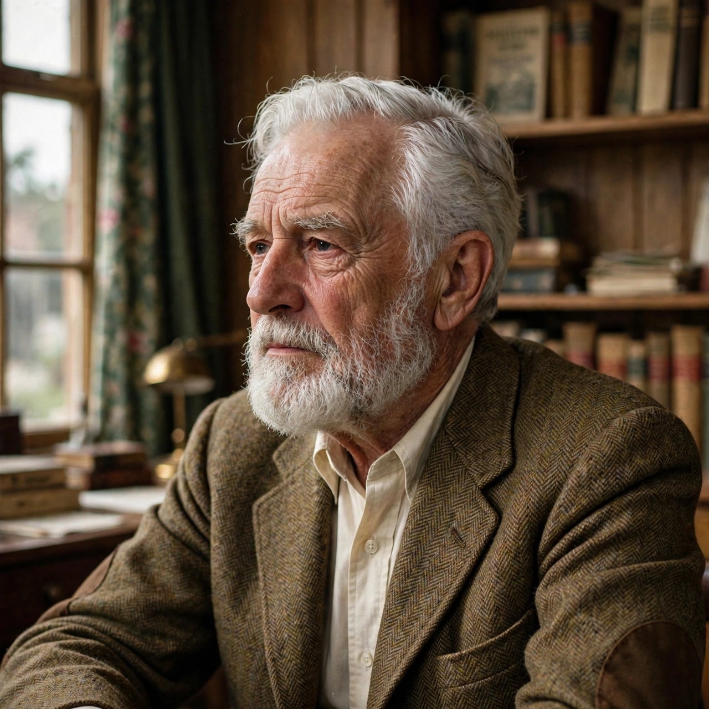

From Wikipedia, the free encyclopedia

| Gerald Gardner | |
|---|---|
| Born | 13 June 1884, Blundellsands, Lancashire, England |
| Died | 12 February 1964 (aged 79), at sea, Mediterranean |
| Occupation | Civil servant, plantation manager, author, amateur anthropologist |
| Known for | Founding Wicca (Gardnerian Wicca) |
| Notable works | High Magic's Aid (1949); Witchcraft Today (1954); The Meaning of Witchcraft (1959) |
| Spouse | Dorothea ("Donna") Rosedale (m. 1927) |
Gerald Brosseau Gardner (13 June 1884 – 12 February 1964) was an English civil servant, plantation manager, amateur anthropologist, and writer best known as the founder of Wicca, the modern Pagan witchcraft religion. After a career in Ceylon (Sri Lanka), Borneo, and Malaya, he retired to England in 1936 and claimed to have been initiated in 1939 into a surviving coven of witches in the New Forest. Following the repeal of the Witchcraft Act in 1951, Gardner publicly promoted the religion in books such as Witchcraft Today (1954), presenting it as the survival of an ancient, pre-Christian fertility faith.
Gardner was born into a wealthy timber-importing family in Blundellsands, Lancashire, and suffered from asthma as a child. He spent much of his youth abroad for his health, travelling in the Mediterranean and Madeira, where he developed interests in archaeology and weaponry. In 1904 he went to Ceylon to work on a tea plantation, later becoming a rubber planter. He subsequently worked in North Borneo and, from 1923, in Malaya as a government inspector of opium dens and later a customs officer in Johor. During these years he pursued amateur anthropology, studying the peoples and magical practices of Southeast Asia; his book Keris and Other Malay Weapons (1936) examined the kris dagger and associated beliefs.
Gardner married Dorothea Rosedale, known as Donna, in 1927. He also joined the Freemasons and was involved with various esoteric and naturist circles; he was a member of the Folklore Society and was ordained in the Ancient British Church, a minor independent Christian body.
Retiring to England in 1936, Gardner settled first in London and then near the New Forest in Hampshire. He joined the Rosicrucian Order Crotona Fellowship, a Rosicrucian theatrical group in Christchurch, where he met Dorothy Clutterbuck. Gardner later claimed that in September 1939 Clutterbuck and members of the fellowship initiated him into a traditional coven — the New Forest coven — which he said preserved the pre-Christian religion of the witch-cult. Historians debate whether such a coven existed; most scholars conclude that Gardner constructed the religion from sources available to him, including Margaret Murray's witch-cult theory, Charles Leland's Aradia, ceremonial magic from the Hermetic Order of the Golden Dawn, Aleister Crowley's writings, Freemasonry, and folk magic.
British law long constrained Gardner: the Witchcraft Act 1735 made it an offence to claim to practise witchcraft. In 1949 he published High Magic's Aid, a novel presenting witchcraft rituals in fictionalised form. After the Fraudulent Mediums Act 1951 replaced the old Witchcraft Act, Gardner went public. In 1954 he published Witchcraft Today, with a foreword by Margaret Murray, asserting that witchcraft was a surviving ancient religion worshipping a Horned God and a Mother Goddess.
Gardner worked with Doreen Valiente, whom he initiated in 1953 and who substantially revised his ritual texts, removing much of the Crowley-derived material and composing enduring liturgy such as the Charge of the Goddess. Gardner founded the Bricket Wood coven in Hertfordshire and opened the Museum of Magic and Witchcraft on the Isle of Man in 1951, in partnership with Cecil Williamson. His tradition — structured around covens, initiation, a Book of Shadows, seasonal festivals (the Wheel of the Year), and the ritual use of tools such as the athame — became known as Gardnerian Wicca and spread internationally, notably to the United States through Raymond and Rosemary Buckland in the 1960s.
Gardner died of a heart attack on 12 February 1964 aboard the Scottish Prince while returning from Lebanon, and was buried in Tunis. Though historians largely reject his claim that Wicca is an unbroken survival from antiquity, Gardner is widely credited as the religion's principal founder. Wicca and the wider modern Pagan movement that grew from it now count hundreds of thousands of adherents worldwide, and Gardner's writings, museum collections, and ritual texts remain foundational to the tradition that bears his name.